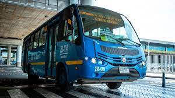
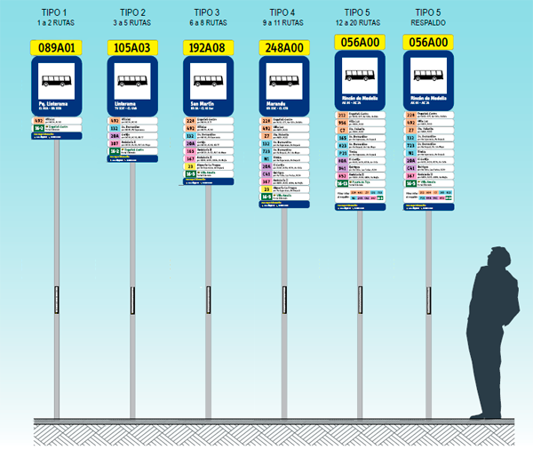
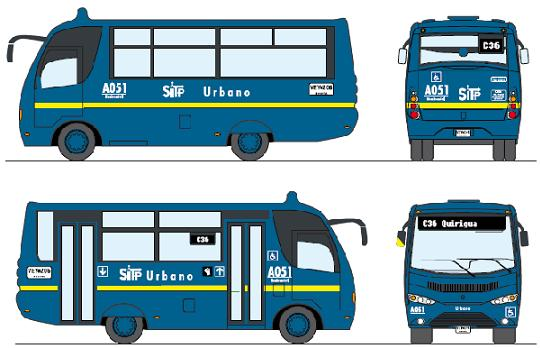

¿Quieres saber más de como funcionan las rutas?

Servicio Urbano
El servicio Urbano transita por las principales vías de la ciudad, conectando paraderos de las rutas establecidas.
Características
Su color característico es el azul.
Sirve para movilizarse por las principales vías de la ciudad y transita por carriles mixtos.
Es similar a las rutas actuales de la ciudad.
El pago se realiza en los vehículos con la tarjeta del sistema.
Cómo utilizar el Servicio Urbano
Para utilizar el servicio urbano tenga en cuenta las siguientes indicaciones:
Recuerde que la tarjeta "tullave" es el medio de pago para acceder a los servicios urbanos del SITP.
Ubica el paradero, levante el brazo para que el bus se detenga y aborde el servicio.
Pase la tarjeta "tullave" por el dispositivo de pago que está al interior del bus.
El bus se detendrá solamente en los paraderos establecidos.
Anuncie su parada con anticipación y baje del bus de manera tranquila y ordenada.
